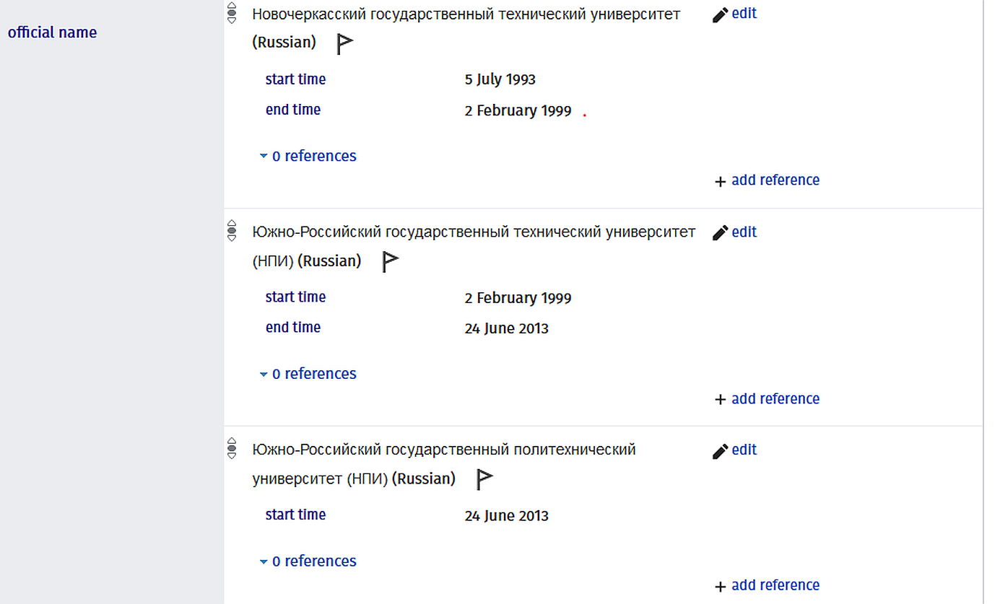
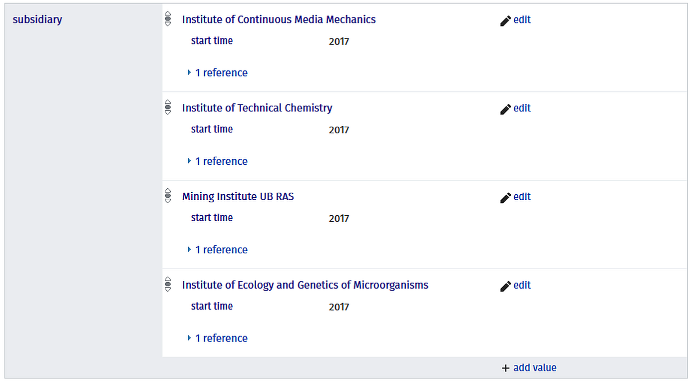
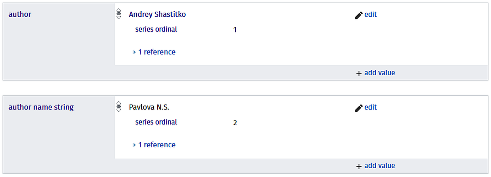
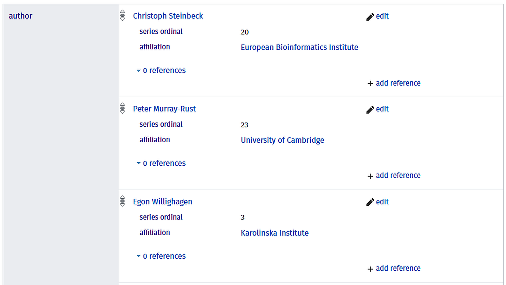
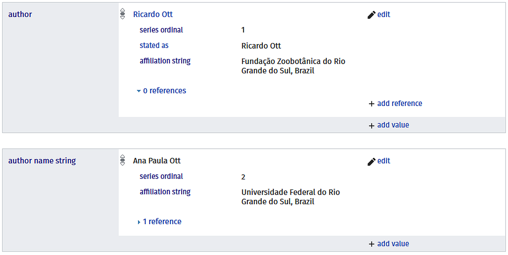

Статья посвящена возможностям отражения информации о вузе или научной организации в сервисе Wikidata. Описаны структура данных, основные поля, способы отражения исторических названий, трансформаций и сложных иерархий.
Всякий, кто был лично вовлечен в редактирование профиля организации в Scopus или в Web of Science, имеет право на предложение создать новый профиль ответить возмущением:
“Как, ещё один профиль? Снова следить за привязкой статей и авторов? Не раньше, чем эту самую Wikidata начнут использовать международные рейтинги!”
Резонно, понимаем, тоже правили. И поэтому решили, что те уникальные возможности, которые предлагает организации Wikidata, заслуживают отдельной статьи.
Wikidata - это открытая база знаний (Knowledge Base), аналогичная тем, в построение которых инвестируют техногиганты Google, Microsoft, Facebook и другие компании. Такие базы знаний представляют из себя огромную сетевую структуру (граф), в которой объекты разной природы (люди, организации, статьи, премии, проекты, гранты, объекты исследований, и многие другие сущности) связаны “определенными” отношениями.
Подобные связи можно извлекать, используя синтаксис SPARQL. Примеры SPARQL-запросов (см. ссылка 1, ссылка 2, ссылка 3, ссылка 4) позволяют оценить разнообразие возможностей использования Wikidata.
Запросы можно выполнять как в онлайн-интерфейсе Wikidata Query Service, так и через API.
За счет открытого API Wikidata позволяет не только извлекать, но также и вносить новую информацию.
В 2021 году создана надстройка к Zotero для импорта библиографической информации в Wikidata, что позволяет обнаруживать в Wikidata профили статей и вносить информацию о цитированиях;
сервис Scholia позволяет не только визуализировать существующие связи для исследователей, журналов, организаций и т.д., но также выполнять поиск профилей авторов и привязку их к статьям (за счет интеграции с сервисом Author Disambiguator).
в Австралии группа энтузиастов работает над созданием модуля к Open Journal Systems для прямой загрузки метаданных статей из издательской системы в Wikidata.
В настоящее время карточки российских организаций в Wikidata и публикации отечественных журналов отличаются крайне неравномерным заполнением. Однако, развитие сервиса Wikidata и интегрированных с ним инструментов позволяет рассчитывать на улучшение качества данных и на расширение возможностей использования.
Растущий интерес к графам знаний, как к одному из наиболее многообещающих форматов организации информации в Сети Интернет, заставляет университеты не просто обращать внимание на Викиданные (Wikidata), но открывать позиции Wikimedian in Residence и прилагать усилия к описания самих себя в формате связанных открытых данных (LOD). Так, Vanderbilt University создали своего бота (VanderBot), который внес уже более 17000 правок в описание университета в Wikidata.
Настало ли время российским университетам и научным центрам заняться хотя бы созданием карточки в Wikidata? Принесет ли более раннее участие какое-то преимущество в будущем? Приведет ли работа над профилем к изменениям, которые оценят и учредитель, и мировое научное сообщество? Предоставим читателю самому ответить на эти вопросы после прочтения материала.
У организации не обязательно должна быть статья в Wikipedia для того, чтобы создать или править профиль в Wikidata. Каждой статье в Wikipedia действительно соответствует запись в Wikidata, поэтому если Вы знаете, что организация имеет такую страницу, Вы можете перейти к соответствующей записи в Wikidata, выбрав в меню слева гиперссылку “Элемент Викиданных”. Четверть профилей организаций в Wikidata (из присутствующих в RIRO v.1.2) не имеют связанной страницы в Wikipedia.
Любой пользователь, зарегистрированный в Wikidata, может править профиль организации (в который Вы вложили столько сил), но порядок обеспечивается наличием оповещения о правках, сохраненной историей, возможностью отмены и хорошо отрегулированными правилами, которые позволяют нейтрализовать вандализм. Сотрудник, отвечающий за поддержание профиля организации в Wikidata, будет получать уведомление о каждом внесенном исправлении и сможет, при необходимости, оспорить любое из них.
Попробуем объяснить кратко.
В Wikidata существуют:
объекты [items] (например, университет ИТМО или Ж.И. Алфёров)
свойства [properties] (например, country, ROR ID или parent organization)
источники [sources] (например, stated in или reference URL)
квалификаторы [qualifiers] (например, language of work or name или start time)
Объект может имеет много разных свойств, связывающих его или с другими объектами - так, объект Q52843163 имеет свойство “[subsidiary](https://www.wikidata.org/wiki/Property:P355”, связывающее его с организациями Q52846275 и Q30274278. Это свойство требует существования “зеркального” свойства, поэтому соответствующие организации имеют свойство parent organization, связывающее их с Q52843163. Эти отношения возникли в 2017 году в связи с реорганизацией, поэтому к свойствам добавлен квалификатор start time, имеющий значение 2017. В качестве источников приведены веб-ссылки на сайт организации, где описаны трансформации, и ссылка вида stated in, указывающая на ЕГРЮЛ, как авторитетный источник сведений.
Большая часть свойств требует уточнений в виде минимального набора квалификаторов (свойство свойства) и ссылок на источники, подтверждающие существование свойств.
В примерах ниже будут показаны основные варианты использования свойств для оформления профиля организации.
Одно из самых важных свойств для организаций в Wikidata - это instance of. Оно может иметь несколько значений - например, крупный медицинский университет может быть одновременно research university, medical organization и open-access publisher.
Используя квалификаторы start time, end time можно описать хронологию появления или исчезновения ролей.
Каждый элемент Викиданных начинается с карточки, в которой приведены названия и описания элемента на разных языках с возможностью указания многочисленных вариантов названий и аббревиатур.
Помимо этого существует важное свойство official name, которое в сочетании с квалификаторами start time, end time и language позволяет отразить всю историю переименований организации. Еще больше расширяет возможность свойство short name, которое требует применения аналогичных квалификаторов.

На рисунке пример оформления названия для университета Q1751487.
В Wikidata существует уже описанная пара свойств parent и subsidiary (которые являются зеркальными), а также свойства has a part и part of. Можно найти и другие, но на наш взгляд, Вы точно не ошибетесь с этим двумя.
Свойства parent и subsidiary рекомендуется использовать для описания отношений между 2 объектами, имеющими собственную автономность, но связанную некоторым порядком подчинения (как головная организация и филиал, или ФОИВ и подведомственная организация).

Осведомленный читатель может заметить, что на иллюстрации профиля Пермского федерального исследовательского центра УрО РАН не отражается Пермский институт сельского хозяйства. На момент написания статьи у этой организации не было профиля в Wikidata. Создать его можно, выбрав в левом меню ссылку Create a new Item, заполнив основные свойства и связав с профилем ПФИЦ УрО РАН парой зеркальных свойств {parent organization-subsidiary}.
Свойство part of можно использовать в качестве свойства для факультета, библиотеки, клинической кафедры, лаборатории и т.д. Это свойство не требует зеркального отображения (т.к. сотни объектов могут быть частью университета), но для наиболее важных объектов не запрещено создавать зеркальное свойство. Для перечисления ключевых подразделений университета можно создать в профиле университета несколько свойств has a part. Пример: подразделения МГУ.
Вышеописанные свойства также могут иметь квалификаторы, с помощью которых несложно описать трансформации вида: НИИ с 2015 года перестал быть филиалом (свойство parent получит квалификатор end time со значением 2015) и стал подразделением (свойство part of получит квалификатор start time с таким же значением).
Можно многословно описывать эту трансформацию на веб-странице НИИ на наиболее значимых мировых языках, а можно выразить её в виде простых “утверждений на языке Wikidata”, понятном не только людям, но и машинам.
Превращение филиала в структурное подразделение выглядит просто, а как быть с ситуацией, когда к организации прикрепляют другие организации с образованием новой? Для этой цели используют зеркальную пару свойств replaces и replaced by, которые указывают на то, что один из объектов утрачивает свою автономность. Для этого свойства необходимо указывать квалификатор point in time (и, конечно же, ссылку на источник, которым может быть веб-сайт с описанием поглощения или запись в ЕГРЮЛ).
В Wikidata определено много свойств и регулярно вводятся новые. Большая часть свойств определена для конкретных типов объектов. Беспроигрышной стратегией будет знакомство с профилями других, похожих организаций.
Для научной организации можно рекомендовать внести информацию про:
веб-сайт
географическое расположение (страна, город, адрес, координаты)
идентификаторы в различных каталогах, реестрах, базах данных
идентификаторы страниц в онлайн-сервисах (включая социальные сети)
Существуют несколько способов отражения в Wikidata связи организации с людьми, которые были или в настоящий момент с ней связаны.
перечислить их в самом профиле организации (см. перечень ректоров НГУ) - это можно сделать в Wikidata
создать в Wikipedia категорию Выпускники университета и включить в неё профили всех персон (в этой статье мы не описываем, как это сделать).
Кроме этого сами персоны в своих Wikidata профилях могут указать на связь с организацией, используя свойства educated at и employer.
У каждой научной статьи также может быть профиль в Wikidata (более 37 млн. статей. из которых 27+ с DOI - данные из проекта Scholia). Если у автора статьи есть профиль в Wikidata, то в профиле статьи используется свойство author, связывающее статью с профилем автора. Если же профиля у автора нет, то используется свойство author name string с текстовой строкой.
Пример: см. на иллюстрации ниже оформление авторов в статье Product Market Definition in Mobile Communications из журнала Экономическая политика.

Аналогично и с организацией - для связывания с профилем организации используется свойство affiliation. Пример: на иллюстрации ниже фрагмент описания авторов в профиле статьи Open Data, Open Source and Open Standards in chemistry: The Blue Obelisk five years on.

Если у организации нет профиля, то можно воспользоваться свойством affiliation string. Пример: описание связей между статьей, авторами и организацией в профиле статьи A new species of Fernandezina (Araneae, Palpimanidae) from southern Brazil. Обратите внимание, что у первого автора есть профиль в Wikidata, поэтому он связан со статьей через свойство author, а второй автор привязан через свойство author name string, потому что тот, кто создавал профиль статьи (будь то бот или человек) не нашел профиль Аны Паулы Отт в Wikidata.

Сложно ли создать профиль исследователя в Wikidata? Вовсе нет. В качестве примера использования свойств можно использовать профиль кого-нибудь известного - Peter Murray-Rust, Н.Н. Боголюбов, Илон Маск.
Если организация выступает в роли издателя журнала, её можно связать с журналом с помощью свойства publisher (это свойство журнала). Если организация является учредителем, то можно попробовать использовать пару зеркальных свойств founded by / founder of.
Если Вы взяли на себя роль “Wikipedian in residence”, добавьте интересующие Вас карточки в Ваш Watchlist (Alt+Shift+W или значок со звездочкой рядом с Историей правок).
Помните, что сегодня значительную часть правок в Wikidata вносят боты. Существуют строгие правила для контроля качества их работы (так что, если бот внес ошибочные данные, все его правки могут быть отменены владельцем бота или администратором Wikidata после рассмотрения жалобы администраторами).
Нередко боты вносят информацию из источников, которые устарели (адреса старых веб-сайтов, прошлые названия и т.д.). Не спешите их удалять - используйте квалификатор end time для устаревшего значения и внесите новое значение для свойства. Вы также можете использовать ранги (rank), чтобы установить предпочтительное значение, если свойство допускает несколько значений.
Если в профиль организации внесена совершенно некорректная информация, Вы можете открыть вкладку View History (над карточкой названий) - выяснить, кто внес эти правки, и отменить их (undo). Или же исправить их прямо в профиле.
Для использования ботов и некоторых инструментов, позволяющих вносить множественные правки, необходимо заработать репутацию - например, внести сначала некоторое количество правок вручную.
Найдите время познакомиться поближе с Вики-культурой и её правилами!
Полезные страницы:
Уже сегодня по идентификаторам организаций из таблицы RIRO Вы можете извлечь из карточек идентификаторы профилей учреждений в социальных сетях Facebook (564) , VKontakte (676), Twitter (205), каналов в Telegram (149) и YoutTube (373), а также адреса веб-сайтов (более 1600), что открывает широкие возможности для исследователей социальных коммуникаций в научной сфере.
Пример: запрос для получения свойств из профиля Мурманского арктического государственного университета.
SELECT ?item ?ogrn ?url ?orgname_eng ?orgname_rus
?twitter ?facebook ?youtube ?vk ?tg
WHERE{ VALUES ?item {wd:Q1276122}
optional {?item rdfs:label ?orgname_eng FILTER (lang(?orgname_eng)="en")}
optional {?item rdfs:label ?orgname_rus FILTER (lang(?orgname_rus)="ru")}
optional {?item wdt:P856 ?url.}
optional {?item wdt:P7011 ?ogrn.}
optional {?item wdt:P2002 ?twitter.}
optional {?item wdt:P2013 ?facebook.}
optional {?item wdt:P3185 ?vk.}
optional {?item wdt:P3789 ?tg.}
optional {?item wdt:P2397 ?youtube.}
SERVICE wikibase:label {bd:serviceParam wikibase:language "en" .}
}Результат запроса можно увидеть здесь
Варианты названий и иерархия позволяют расширить возможности проведения наукометрических исследований на исторических массивах данных, в которых могут фигурировать несколько поколений названий.
Wikidata позволяет быстро собрать и включить в исследование свойства других объектов. Так, авторы блога использовали Wikidata для исследования научной коллаборации граничащих субъектов РФ.
Первые версии массивов RIRO содержали фрагменты профилей организаций из Викиданных с широким набором полей. Начиная с версии RIRO 1.2 таблица 5 (Wiki) будет содержать ограниченный набор полей. Вы можете извлечь информацию из других полей, экспериментируя с SPARQL-запросами.
Вопросы по использованию Wikidata и SPARQL можно задать:
в Twitter (тэг #wikidata и группа https://twitter.com/wikidata)
в Telegram-канале (ссылка-приглашение здесь)
Allaire J, Iannone R, Presmanes Hill A, Xie Y (2021). distill: ‘R Markdown’ Format for Scientific and Technical Writing. R package version 1.2, <URL: https://CRAN.R-project.org/package=distill>.
Allaire J, Xie Y, McPherson J, Luraschi J, Ushey K, Atkins A, Wickham H, Cheng J, Chang W, Iannone R (2021). rmarkdown: Dynamic Documents for R. R package version 2.7, <URL: https://github.com/rstudio/rmarkdown>.
Xie Y (2020). knitr: A General-Purpose Package for Dynamic Report Generation in R. R package version 1.30, <URL: https://yihui.org/knitr/>.
Xie Y (2015). Dynamic Documents with R and knitr, 2nd edition. Chapman and Hall/CRC, Boca Raton, Florida. ISBN 978-1498716963, <URL: https://yihui.org/knitr/>.
Xie Y (2014). “knitr: A Comprehensive Tool for Reproducible Research in R.” In Stodden V, Leisch F, Peng RD (eds.), Implementing Reproducible Computational Research. Chapman and Hall/CRC. ISBN 978-1466561595, <URL: http://www.crcpress.com/product/isbn/9781466561595>.
Xie Y, Allaire J, Grolemund G (2018). R Markdown: The Definitive Guide. Chapman and Hall/CRC, Boca Raton, Florida. ISBN 9781138359338, <URL: https://bookdown.org/yihui/rmarkdown>.
Xie Y, Dervieux C, Riederer E (2020). R Markdown Cookbook. Chapman and Hall/CRC, Boca Raton, Florida. ISBN 9780367563837, <URL: https://bookdown.org/yihui/rmarkdown-cookbook>.
Text and figures are licensed under Creative Commons Attribution CC BY 4.0. The figures that have been reused from other sources don't fall under this license and can be recognized by a note in their caption: "Figure from ...".